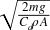

2This chapter is the first 3929in a series of chapters that discuss specific real-world phenomena and systems, such as projectile motion and airplanes, with the goal of giving you a solid understanding of their real-life behavior. 3930 This understanding will help you to model these or similar systems accurately in your games. 3931 Instead of relying on purely idealized formulas, we'll present a wide variety of practical formulas and data that you can use. 3932 We've chosen the examples in this and later chapters to illustrate common forces and phenomena that exists in many systems, not just the ones we'll be discussing here. 7 For example, while 8Chapter 163935 , 3936 "Ships and Boats," 3937 discusses buoyancy in detail, buoyancy is not limited to ships; any object immersed in a fluid experiences buoyant forces. 12 The same applies for the topics discussed in this chapter and 13Chapter 1513, 15Chapter 1715, 16Chapter 1816, and 18Chapter 19 .3944
3946Once you understand what's supposed to happen with these and similar systems, you'll be in a better position to interpret your simulation results to determine if they make sense—that is, if they are realistic enough. 3947 You'll also be better educated on what factors are most important for a given system such that you can make appropriate simplifying assumptions to help ease your effort. 3948 Basically, when designing and optimizing your code, you'll know where to cut things out without sacrificing realism. 23 This gets into the subject 24of 24parameter tuning3951 .
3954Over the next few chapters, we want to give you enough of an understanding of certain physical phenomenon such that you can tune your models for the desired behavior. 3955 If you are modeling several similar objects in your simulation but want each one to behave slightly differently, then you have to tune the forces that get applied to each object in order to achieve the varying behavior. 30 Since forces govern the behavior of objects in your simulations, we'll be focusing on force calculations with the intent of showing you how and why certain forces are what they are instead of simply using the idealized formulas discussed in 31Chapter 33958 . 3959 Parameter tuning isn't just limited to tuning your model's behavior—it also involves dealing with numerical issues, such as numerical stability in your integration algorithms. 34 We'll discuss these issues more when we show you several simulation examples in 35Chapter 735 through 37Chapter 143963 .
3965We've devoted this entire chapter to projectile motion because so many physical problems that may find their way into your games fall in this category. 3966 Further, the forces governing projectile motion affect many other systems that aren't necessarily projectiles—for example, the drag force experienced by projectiles is similar to that experienced by airplanes, cars, or any other object moving through a fluid such as air or water.
42A projectile is an object that is placed in motion by a force acting over a very short period of time, which, as you know from 43Chapter 53970 , is also called an impulse. 45 3972After the projectile is set in motion by the initial impulse during the launching phase, the projectile enters into the projectile motion phase, where there is no longer a thrust or propulsive force acting on it. 47 As you know already from the examples presented in 48Chapter 248 and 50Chapter 43976 , there are other forces that act on projectiles. 3977 (For the moment, we're not talking about self-propelled 3978 "projectiles" 3979 such as rockets since, due to their propulsive force, they don't follow 3980 "classical" 55 projectile motion until after they've expended their fuel.)
56In the simplest case, neglecting aerodynamic effects, the only force acting on a projectile other than the initial impulsive force is 3983gravitation. 3984 For situations where the projectile is near the earth's surface, the problem reduces to a constant acceleration problem. 59 Assuming that the earth's surface is flat—that is, that its curvature is large compared to the range of the projectile—the following statements describe projectile motion:
3991The maximum range, for a given launch velocity, occurs when the launch angle is 45°.
3997The vertical component of velocity is 0 at the apex of the trajectory.
77The time required to descend from the apex to the point of impact equals the time required for an object to fall the same vertical distance when dropped straight down from a height equal to the height of the 4004apex.
83There are four simple 85classes of projectile motion problems that we'll summarize:
4021In the first type of problem, the launch point and the target point are located on the same horizontal plane. 96 In 97Figure 6-197, 97v97097 is the initial velocity of the projectile at the time of launch, φ is the launch angle, 97R97 is the range of the projectile, and 97h4024 is the height of the apex of the trajectory.
106To solve this type of problem, use the formulas shown in 107Table 6-14034 . 109 Note, in these formulas 109t109 represents any time instant after launch, and 109T4035 represents the total time from launch to impact.
4062In the second type of problem, the launch point is located on a lower horizontal plane than the target. 137 In 138Figure 6-2138, the launch point's 138y138 coordinate is lower than the target's 138y4065 coordinate.
147For this type of problem, use the formulas shown in 148Table 6-24075 . 150 Notice that most of these formulas are the same as those shown in 151Table 6-14078 .
177In the third type of problem, the target is located on a plane lower than the launch point; in 178Figure 6-3178, the target's 178y178 coordinate is lower than the launch point's 178y4105 coordinate.
187Table 6-34113 shows the formulas to use for this type of problem. 188 Here again, almost all of the formulas are the same as those shown in 189Table 6-14116 .
4141Finally, the fourth type of problem involves dropping the projectile from a moving system, such as an airplane. 4142 In this case, the initial velocity of the projectile is horizontal and equal to the speed of the vehicle dropping it. 217 218Figure 6-44145 illustrates this type of problem.
227Table 6-44153 shows the formulas to use to solve this type of problem. 228 Note here that when v228o4154 is 0, the problem reduces to a simple free-fall problem in which the projectile drops straight down.
4176These formulas are useful if you're writing a game that does not require a more accurate treatment of projectile motion—that is, if you don't need or want to consider the other forces that can act on a projectile when in motion. 251 If you are going for more accuracy, you'll have to consider these other forces and treat the problem as we 253did in 254Chapter 44181 's example.
258In 259Chapter 3259 and 261Chapter 4261, we 4189showed you the idealized formulas for viscous fluid dynamic drag as well as how to implement drag in the equations of motion for a projectile. 264 This was illustrated in the example program discussed in 265Chapter 44192 . 4193 Recall that the drag force is a vector just like any other force and that it acts on the line of action of the velocity vector but in a direction opposing velocity. 4194 While those formulas work in a game simulation, as we said before, they don't tell the whole story. 4195 While we can't treat the subject of fluid dynamics in its entirety in this book, we do want to give you a better understanding of drag than just the simple idealized equation presented earlier.
4197Analytical methods can show that the drag on an object moving through a fluid is proportional to its speed, size, shape, and the density and viscosity of the fluid through which it is moving. 4198 You can also come to these conclusions by drawing on your own real-life experience. 4199 For example, when waving your hand through the air, you feel very little resistance; however, if you put your hand out of a car window traveling at 100 km/h, then you feel much greater resistance (drag force) on your hand. 274 This is because drag is 4202speed dependent. 4203 When you wave your hand underwater—say, in a swimming pool—you'll feel a greater drag force on your hand than you do when waving it in the air. 4204 This is because water is more dense and viscous than air. 4205 As you wave your hand underwater, you'll notice a significant difference in drag depending on the orientation of your hand. 4206 If your palm is in line with the direction of motion—that is, you are leading with your palm—then you'll feel a greater drag force than you would if your hand were turned 90 degrees as though you were executing a karate chop through the water. 4207 This tells you that drag is a function of the shape of the object. 4208 You get the idea.
285To facilitate our discussion of fluid dynamic drag, let's look at the flow around a 4213sphere moving through a fluid such as air or water. 288 If the sphere is moving slowly through the fluid, the flow pattern around the sphere would look something like 289Figure 6-54216 .
298Bernoulli's equation298, which 4227relates pressure to velocity in fluid flow, says that as the fluid moves around the sphere and speeds up, the pressure in the fluid (locally) will go down. 302 The equation, presented by Daniel 304Bernoulli in 1738, applies to frictionless incompressible fluid flow and looks like this:304[30515305]
| 305P / γ + z + V3052305 / (2g) = constant |
307where 307P307 is the pressure at a point in the fluid volume under consideration, γ is the specific weight of the fluid, 307z307 is the elevation of the point under consideration, 307V307 is the fluid velocity at that point, and 307g4233 is the acceleration due to gravity. 308 As you can see, if the expression on the left is to remain constant, and assuming that 308z4234 is constant, then if velocity increases the pressure must decrease. 4235 Likewise, if pressure increases, then velocity must decrease.
311As you can see in 312Figure 6-5312, the pressure will be greatest at the stagnation point, 312S312l4239 , and will decrease around the leading side of the sphere and then start to increase again around the back of the sphere. 314 In an ideal fluid with no friction, the pressure is fully recovered behind the sphere and there is a trailing stagnation point, 314S314t4240 , whose pressure is equal to the pressure at the leading stagnation point. 4241 Since the pressure fore and aft of the sphere is equal and opposite, there is no net drag force acting on the sphere.
4243The pressure on the top and bottom of the sphere will be lower than at the stagnation points since the fluid velocity is greater over the top and bottom. 4244 Since this is a case of symmetric flow around the sphere, there will be no net pressure difference between the top and bottom of the sphere.
4246In a real fluid there is friction, which affects the flow around the sphere such that the pressure is never fully recovered on the aft side of the sphere. 4247 As the fluid flows around the sphere, a thin layer sticks to the surface of the sphere due to friction. 322 In 324this 324boundary layer324, the speed of the fluid varies from 0 at the sphere surface to the ideal free stream velocity, as illustrated in 325Figure 6-64252 .
4267Moving further aft along the sphere, the boundary layer grows in thickness and will not be able to maintain its adherence to the sphere surface, and it will separate at some point. 342 Beyond 344this 344separation point344, the flow will be turbulent, and this is called 346the 346turbulent wake4272 . 4273 In this region, the fluid pressure is lower than that at the front of the sphere. 4274 This pressure differential gives rise to the pressure component of drag. 349 350Figure 6-74277 shows how the flow might look.
4288Now, if you were to roughen the surface of the sphere, you'll affect the flow around it. 4289 As you would expect, this roughened sphere will have a higher friction drag component. 364 However, more importantly, the flow will adhere to the sphere longer and the separation point will be pushed further back to approximately 115°, as shown in 365Figure 6-84292 .
4306The total drag on the sphere depends very much on the nature of the flow around the sphere—that is, whether the flow is laminar or turbulent. 4307 This is best illustrated by looking at some experimental data. 382 383Figure 6-9383 shows a typical curve of the total drag coefficient for a sphere plotted as a385 function of the 385Reynolds number4311 .
394The Reynolds number (commonly denoted 394N394r394 or 394R394n4320 ) is a dimensionless number that represents the speed of fluid flow around an object. 4321 It's a little more than just a speed measure, since it includes a characteristic length for the object and the viscosity and density of the fluid. 396 398The formula for the Reynolds number is:
| 398R398n398 = (v L)/υ |
| 400R400n400 = (v L ρ)/µ |
422We calculate the total 424drag coefficient, 424C424d424, by measuring the total resistance, 424R424t424, from tests and using the following formula:
| 424C424d424 = R424t424 / (0.5 ρ v4242424 A) |
| 432R432t432 = (0.5 ρ v4322432 A) C432d |
434This is a better equation to use than the ones given in 435Chapter 34362 , assuming you have sufficient information available—namely, the total drag coefficient, density, velocity, and area. 4363 Note the dependence of total resistance on velocity squared. 438 To get 438R438t438 in units of newtons (N), you must have velocity in m/s, area in m4382438, and density in kg/m4383438 (remember C438d4364 is dimensionless).
440Turning back now to 441Figure 6-94368 , you can make a couple of observations. 4369 First, you can see that the total drag coefficient decreases as the Reynolds number increases. 4370 This is due to the formation of the separation point and its subsequent move aft on the sphere as the Reynolds number increases and the relative reduction in pressure drag, as discussed previously. 4371 At a Reynolds number of approximately 250,000, there is a dramatic reduction in drag. 446 This is a result of the flow becoming fully turbulent with a corresponding reduction in pressure 4373drag.
450In the 450Cannon2450 example in 451Chapter 4451, we 4381implemented the ideal formula for air drag on the projectile. 4382 In that case we used a constant value of drag coefficient that was arbitrarily defined. 457 As we said earlier, it would be better to use the formula presented in this chapter for total drag along with the total drag coefficient data shown in 458Figure 6-94385 to estimate the drag on the projectile. 4386 While this is more 4387 "accurate," 4388 it does complicate matters for you. 463 Specifically, the drag coefficient is now a function of the 4390Reynolds number, which is a function of velocity. 4391 You'll have to set up a table of drag coefficients versus the Reynolds number and interpolate this table given the Reynolds number calculated at each time step. 4392 As an alternative, you can fit the drag coefficient data to a curve to derive a formula that you can use instead; however, the drag coefficient data may be such that you'll have to use a piecewise approach and derive curve fits for each segment of the drag coefficient curve. 4393 The sphere data presented herein is one such case. 4394 The data does not lend itself nicely to a single polynomial curve fit over the full range of the Reynolds number. 4395 In such cases, you'll end up with a handful of formulas for drag coefficient, with each formula valid over a limited range of Reynolds numbers.
472While the 472Cannon24398 example does have its limitations, it is useful to see the effects of drag on the trajectory of the projectile. 4399 The obvious effect is that the trajectory is no longer parabolic. 474 You can see in 475Figure 6-104402 that the trajectory appears to drop off much more sharply when the projectile is making its descent after reaching its apex height.
4410Another important effect of drag on trajectory (this applies to objects in free fall as well) is the fact that drag will limit the maximum vertical velocity attainable. 485 This limit is the so-called 485terminal velocity4411 . 486 4416Consider an object in free fall for a moment. 4417 As the object accelerates toward the earth at the gravitation acceleration, its velocity increases. 4418 As velocity increases, so does drag since drag is a function of velocity. 4419 At some speed the drag force retarding the object's motion will increase to a point where it is equal to the gravitational force that's pulling the object toward the earth. 4420 In the absence of any other forces that may affect motion, the net acceleration on the object is 0, and it continues its descent at the constant terminal velocity.
4423Let us illustrate this further. 498 Go back to the formula we derived for the 498y498 component (vertical component) of velocity for the projectile modeled in the 498Cannon24424 example. 499 Here it is again so you don't have to flip back to 500Chapter 4500:
| 500v500y2500 = (1 / C500d500) e500(–C500d500/m)t500 (C500d500 v500y1500 + m g) – (m g) / C500d |
502It isn't obvious from looking at this equation, but the velocity component, 502v502y24428 , asymptotes to some constant value as time increases. 503 To help you visualize this, we've plotted this equation, as shown in 504Figure 6-114431 .
| 517v517t517 =  |
519The trick in applying this formula is in determining the right value for the 4446drag coefficient. 4447 Just for fun, let's assume a drag coefficient of 0.5 and calculate the terminal velocity for several different objects. 4448 This exercise will allow you to see the influence of the object's size on terminal velocity. 523 524Table 6-5524 gives the terminal velocities for various objects in free fall using an air density of 1.225 kg/m52434450 (air at standard atmospheric pressure at 15°C). 525 Using this equation with density in kg/m5253525 means that 525m525 must be in kg, 525g525 in m/s5252525, and 525A525 in m52524451 in order to get the terminal speed in m/s. 526 We went ahead and converted from m/s to kilometers per hour (km/h) to present the results in 527Table 6-54454 . 529 The weight of each object shown in this table is simply its mass, 529m529, times 529g4455 .
4483Although we've talked mostly about spheres in this section, the discussions on fluid flow generally apply to any object moving through a fluid. 4484 Of course, the more complex the object's geometry, the harder it is to analyze the drag forces on it. 4485 Other factors such as surface condition, and whether or not the object is at the interface between two fluids (such as a ship in the ocean) further complicate the analysis. 4486 In practice, scale model tests are particularly useful. 561 In the 562Bibliography562, we give several sources where you can find more practical drag data for objects other than 4490spheres.
569The 569Magnus effect569 (also known as the 569Robbins effect569) is4498 quite an interesting phenomenon. 4499 You know from the previous section that an object moving through a fluid encounters drag. 4500 What would happen if that object were now spinning as it moved through the fluid? 575 For example, consider the 4503sphere that we talked about earlier and assume that while moving through a fluid such as air or water, it spins about an axis passing through its center of mass. 4504 What happens when the sphere spins is the interesting part—it actually generates lift! 579 That's right, 579lift4505 . 580 4507From everyday experience, most people usually associate lift with a wing-like shape such as an airplane wing or a hydrofoil. 4508 It is far less well known that cylinders and spheres can produce lift as well—that is, as long as they are spinning. 4509 We'll use the moving sphere to explain what's happening here.
4512From the previous section on drag, you know that for a fast-moving sphere there will be some point on the sphere where the flow separates, creating a turbulent wake behind the sphere. 4513 Recall that the pressure acting on the sphere within this turbulent wake is lower than the pressure acting on the leading surface of the sphere, and this pressure differential gives rise to the pressure drag component. 588 When the sphere is spinning—say, clockwise—about a horizontal axis passing through its center, as shown in 589Figure 6-124516 , the fluid passing over the top of the sphere will be sped up while the fluid passing under the sphere will be retarded.
4537The magnitude of the Magnus force is proportional to the speed of travel, rate of spin, density of fluid, size of the object, and nature of the fluid flow. 4538 This force is not easy to calculate analytically, and as with many problems in fluid dynamics, you must rely on experimental data to accurately estimate it for a specific object under specific conditions. 4539 There are, however, some analytical techniques that will allow you to approximate the Magnus force. 614 Without going into the theoretical details, you can apply the 614Kutta-Joukouski theroem4540 to estimate the lift force on rotating objects such as cylinders and spheres. 615 The Kutta-Joukouski theorem is 4542based on a frictionless idealization of fluid flow involving the concept of circulation around the object (like a vortex around the object). 617 You can find the details of this theory in any fluid dynamics text (we give some references in the 618Bibliography4545 ), so we won't go into the details here. 4546 However, we will give you some results.
622For a spinning circular cylinder moving through a fluid, you can use this formula to estimate the Magnus lift force:
| 622F622L622 = 2 π ρ L v r6222622 ω |
623where 623v623 is the speed of travel, 623L623 is the length of the cylinder, 623r4549 is its radius, and ω is its angular velocity in radians per second (rad/s). 624 If you have spin, 624n624, in revolutions per second (rps), then ω = 2 π 624n4550 . 625 If you have spin, 625n625, in revolutions per minute (rpm), then ω = (2 π 625n4551 ) / 60.
627For a spinning sphere moving through a fluid, you can use this formula:
| 627F627L627 = (2 π ρ v r6274627 ω) / (2 r) |
628where 628r4554 is the radius of the sphere. 4555 Consistent units for these equations would yield lift force in pounds in the English system or newtons in the SI system. 630 In the SI system, the appropriate units for these quantities are kg/m63034556 , m/s, and m, respectively.
4558Keep in mind that these formulas only approximate the Magnus force; they'll get you in the ballpark, but they are not exact and actually could be off by up to 50% depending on the situation. 4559 These formulas assume that 1) there is no slip between the fluid and the rotating surface of the object, 2) there is no friction, 3) surface roughness is not taken into account, and 4) there is no boundary layer.
4561At any rate, these equations will allow you to approximate the Magnus effect for flying objects in your games, where you'll be able to model the relative differences between objects of different size that may be traveling at different speeds with different spin rates. 4562 You'll get the look right. 637 If numerical accuracy is what you're looking for, then you'll have to turn to experimental data for your 4564specific problem.
4567Similar to the drag data shown in the previous section, experimental lift data is generally presented in terms of lift coefficient. 642 Using an equation similar to the drag equation, you can calculate the 643lift force with the following equation:
| 643F643L643 = (0.5 ρ v6432643 A) C643L |
651For example, consider a 4579golf ball struck perfectly (right!) such that the ball spins about a horizontal axis perpendicular to its direction of travel while in flight. 4580 In this case the Magnus force will tend to lift the ball higher in the air, increasing its flight time and range. 4581 For a golf ball struck such that its initial velocity is 58 m/s with a take-off angle of 10 degrees, the increase in range due to Magnus lift is on the order of 59 meters; thus, it's clear that this effect is significant. 4582 In fact, over the long history of the game of golf, people have attempted to maximize this effect. 4583 In the late 1800s, when golf balls were still made with smooth surfaces, players observed that used balls with roughened surfaces flew even better than smooth balls. 4584 This observation prompted manufacturers to start making balls with rough surfaces so as to maximize the Magnus lift effect. 4585 The dimples that you see on modern golf balls are the result of many decades of experience and research and are thought to be optimum.
672As another example, consider a 4600baseball pitched such that it's spinning with topspin about a horizontal axis perpendicular to its direction of travel. 4601 Here the Magnus force will tend to cause the ball to curve in a downward direction, making it drop more rapidly than it otherwise would without spin. 4602 If the pitcher spins the ball such that the axis of rotation is not horizontal, then the ball will curve out of the vertical plane. 4603 Another trick that pitchers use is to give the ball backspin, making it appear (to the batter) to actually rise. 678 This rising fastball does not 678actually4604 rise, but because of the Magnus lift force it falls much less rapidly than it would without spin.
//----------------------------------------------------------------------------//
// Global variables required for this simulation
//----------------------------------------------------------------------------//
TVector V1; // Initial velocity (given), m/s
TVector V2; // Velocity vector at time t, m/s
double m; // Projectile mass (given), kg
TVector s1; // Initial position (given), m
TVector s2; // The projectile's position (displacement) vector, m
double time; // The time from the instant the projectile
// is launched, s
double tInc; // The time increment to use when stepping
// through the simulation, s
double g; // acceleration due to gravity (given), m/s^2
double spin; // spin in rpm (given)
double omega; // spin in radians per second
double radius; // radius of projectile (given), m
#define PI 3.14159f
#define RHO 1.225f // kg/m^3
//----------------------------------------------------------------------------//
int DoSimulation(void)
//----------------------------------------------------------------------------//
{
double C = PI * PI * RHO * radius * radius * radius * omega;
double t;
// step to the next time in the simulation
time+=tInc;
t = time;
// Calc. V2:
V2.i = 1.0f/(1.0f-(t/m)*(t/m)*C*C) * (V1.i + C * V1.j * (t/m) −
C * g * (t*t)/m);
V2.j = V1.j + (t/m)*C*V2.i - g*t;
// Calc. S2:
s2.i = s1.i + V1.i * t + (1.0f/2.0f) * (C/m * V2.j) * (t*t);
s2.j = s1.j + V1.j * t + (1.0f/2.0f) * ( ((C*V2.i) - m*g)/m ) * (t*t);
// Check for collision with ground (x-z plane)
if(s2.j <= 0)
return 2;
// Cut off the simulation if it's taking too long
// This is so the program does not get stuck in the while loop
if(time>60)
return 3;
return 0;
}704The heart of this simulation is the lines that calculate 704V2704 and 704s24630 , the instantaneous velocity and position of the projectile, respectively. 705 The equations of motion here come from the 2D kinetic equations of motion including gravity, as discussed in 706Chapter 4706, combined with the following formula (shown earlier) for estimating the Magnus lift on a spinning sphere:
| 706F706L706 = (2 π7062706 ρ v r7064706 ω) / (2 r) |
4634You can see the effect of spin on the projectile's trajectory by providing the sample program with different values for spin in revolutions per minute. 709 The program converts this to radians per second and stores this value in the variable 709omega4635 . 4636 A positive spin value indicates bottom spin such that the bottom of the sphere is spinning away from you, while a negative spin indicates topspin, where the top of the ball spins away from you. 4637 Bottom spin generates a positive lift force that will tend to extend the range of the projectile, while topspin generates negative lift that will force the projectile toward the ground, shortening its range. 712 (Note that this example assumes that the spin axis is horizontal and perpendicular to the plane of the screen.) 713Figure 6-13713 illustrates this 4643behavior.
727In 728Chapter 1728 we 4658mentioned that some problems in dynamics involve variable mass. 4659 We'll look at variable mass here since it applies to self-propelled projectiles such as rockets. 4660 When a rocket is producing thrust to accelerate, it loses mass (fuel) at some rate. 4661 When all of the fuel is consumed (burnout), the rocket no longer produces thrust and has reached its maximum speed. 4662 After burnout you can treat the trajectory of the rocket just as you would a non-self-propelled projectile, as discussed earlier. 4663 However, while the rocket is producing thrust, you need to consider its mass change since this will affect its motion.
| 741ΣF = m a = d/dt (m v) =m (dv/dt) + (dm/dt) v |
| 748ΣF = m dv/dt + dm/dt u |
| 757ΣF = m dv/dt + dm/dt u |
| 757−mg = m dv/dt − m' u |
| 759m' u − mg = m dv/dt = ma |
| 762m = m762o762 − m' t |
770[771154698 ] In a real fluid with friction, this equation will have extra terms that account for energy losses due to friction.
774[77516775] 775The curve shown here is intended to demonstrate the trend of C775d775 versus R775n4702 for a smooth sphere. 777 For more accurate drag coefficient data for spheres and other shapes, refer to any college-level fluid mechanics text, such as Robert L. Daugherty, Joseph B. Franzini, and E. John Finnemore's 777Fluid Mechanics with Engineering Applications4703 (McGraw-Hill).